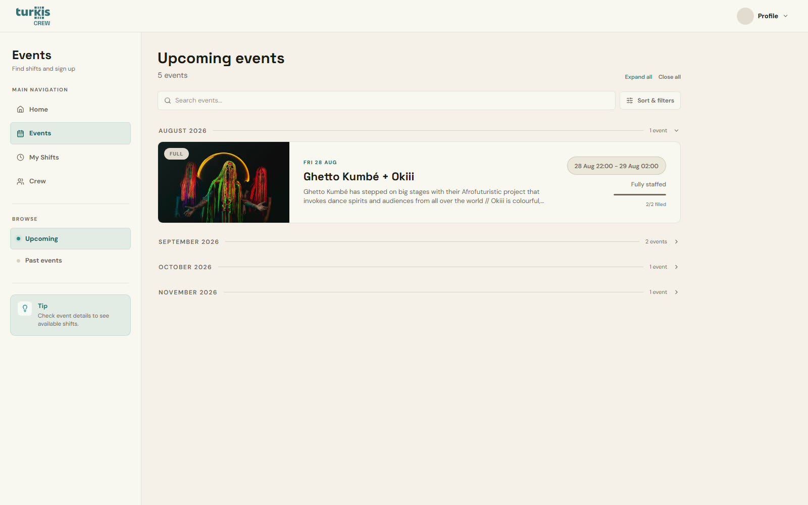

01 / Frivilligplatform
Turkis Crew
turkis drives af frivillige, og frivillige skal kunne finde deres vagter, deres information og hinanden. Turkis Crew samler det hele: Man søger om at blive frivillig, ser events, tager vagter, chatter med teamet og holder sin profil ved lige. Admins håndterer ansøgninger, events og beskeder samme sted.
Jeg står selv backstage på huset, så platformen er bygget til arbejdsgange, jeg kender indefra.
Min rolle: Design, udvikling og drift · frivillig backstage manager- Web-app
- Frivillige
- Kulturliv